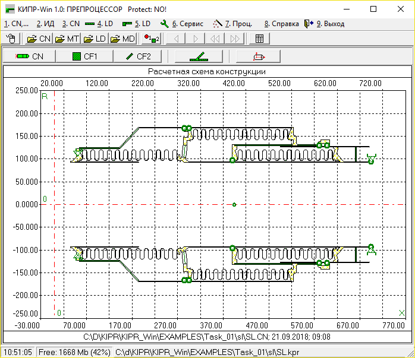
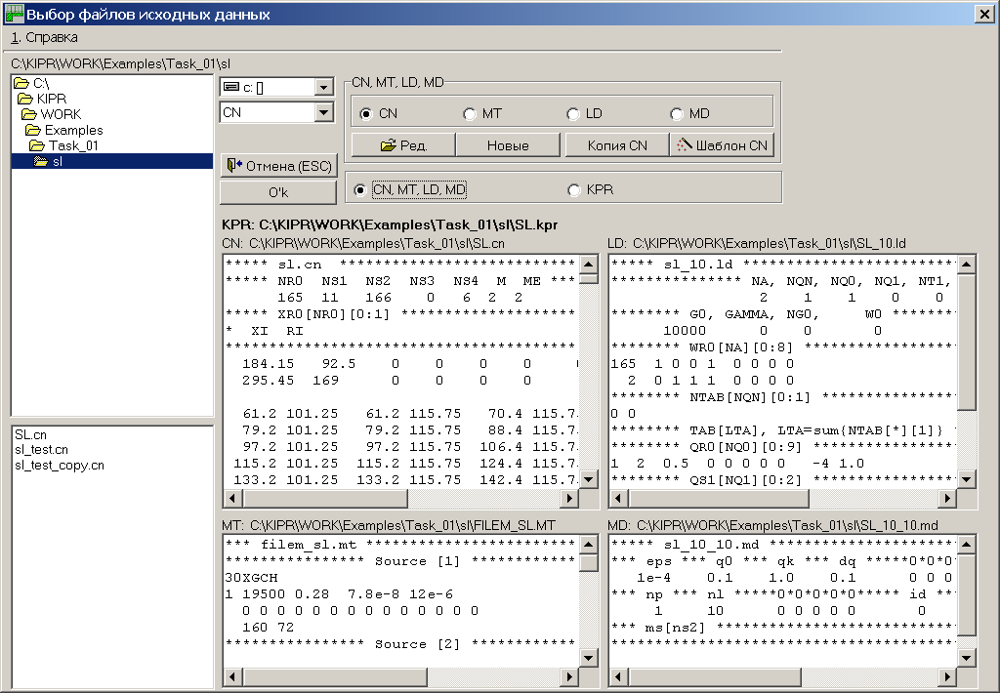
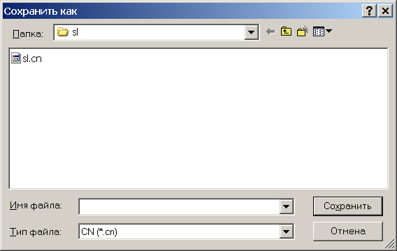
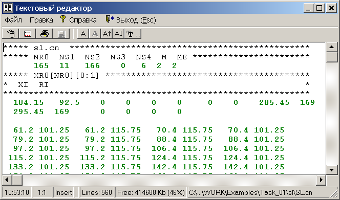

Для чего нужен файл-проект (файл KPR)
Рекомендуемая технология создания
файла-проекта KPR
Результатом работы ПРЕПРОЦЕССОРА является формирование файла-проекта KPR:
|
KPR |
=> |
CNX |
LDX |
MDX |
|
Пусть наборы исходных данных
задачи во внешнем представлении CN (файл конструкции), LD (файл нагрузок), MD (файл
методических параметров) и MT (база данных материалов) имеют следующие оригинальные
имена, заданные пользователем: name_1.cn,
name_2.ld, name_3.md, name_m.mt. Пусть также эти
наборы данных размещены в каталоге
|
c:\work_001\calc_102 |
Результатом преобразования наборов данных CN, LD, MD и MT во внутреннее представление являются наборы данных (файлы) с уже не оригинальными именами name_1.cnx, name_2.ldx, name_3.mdx, формируемыми ПРЕПРОЦЕССОРОМ, и файл-проект KPR с оригинальным именем (например, name_01.kpr), заданным пользователем:
c:\work_001\calc_102\name_1.cnx
c:\work_001\calc_102\name_2.ldx
c:\work_001\calc_102\name_3.mdx
c:\work_001\calc_102\name_m.mt
Файл-проект KPR определяет пути доступа к исходным
данным задачи (к расчетному случаю),
файлам-протоколам расчета и файлам результатов.
По оригинальному имени name_01.kpr ПРЕПРОЦЕССОРОМ и ПРОЦЕССОРОМ формируются файлы RS0, RES, FW с не оригинальными именами name_01.rs0, name_01.fw, name_01.res.
Файл-проект KPR (расчетный случай) создается ПРЕПРОЦЕССОРОМ системы КИПР-Win. Для старта ПРЕПРОЦЕССОРА необходимо выбрать позицию 3 Меню ОБОЛОЧКИ системы. В результате на экране дисплея появится окно ПРЕПРОЦЕССОРА системы (рис. 1).

Рис. 1
Если файл-проект KPR был создан ранее, в рабочей области окна ПРЕПРОЦЕССОРА появится изображение расчетной схемы конструкции, как показано на рис. 1 (в нижней части – имя активного файл-проект KPR). В противном случае автоматически осуществится переход к режиму создания файла-проекта KPR (или выбору ранее созданного файла-проекта KPR). На экране дисплея появится диалоговое окно, аналогичное изображенному на рис. 2. Причем настроено это окно первоначально будет на режим работы с файлами CN, MT, LD, MD (рис. 3).
Для создания файла-проекта KPR (или выбора ранее созданного другого файла-проекта KPR) необходимо выбрать поз. 1 Основного Меню ПРЕПРОЦЕССОРА 1. CN,… (на рис. 1 на нее указывает курсор компьютерной мыши). В результате на экране дисплея появится диалоговое Окно выбора исходных файлов (рис. 2). Причем настроено это окно первоначально будет на выбор файла-проекта KPR.
Рис. 2
Позиции, обозначенные на рис. 2, имеют следующее назначение:
Данное диалоговое окно работает в двух режимах:
Режим выбора файла-проекта KPR
Выбор файла-проекта KPR осуществляется следующим образом. Вначале необходимо убедиться, что данный режим работы активирован (переключить орган управления 11 на режим работы с файлом-проектом KPR). Далее с помощью органов управления 2, 3 диалогового окна выбирается рабочий каталог, в котором располагается искомый файл. Затем с помощью органа управления 23 осуществляется выбор файла. При этом при движении курсора в органе управления 23 по списку файлов синхронно в окнах 15, 17, 20, 22 отображается содержание файлов CN, MT, LD, MD, список которых содержится в файле-проекте KPR, на который указывает курсор. В этом режиме никакого редактирования файлов исходных данных НЕ ПРЕДУСМОТРЕНО!
Режим работы с файлами CN, MT, LD, MD
Данный режим работы активируется переключением на режим работы с файлами CN, MT, LD, MD (поз. 11 на рис. 2). При этом группа элементов управления созданием, редактированием и выбором файлов CN, MT, LD, MD расчетного случая (поз 5. на рис. 2) переключится в активное состояние (рис. 3) (эта группа недоступна в режиме выбора файла-проекта KPR).
С помощью органов управления 2, 3 диалогового окна (рис. 2) выбирается рабочий каталог, в котором будут располагаться файлы нового расчетного случая.

Рис. 3
Приведем два основных сценариев работы в данном случае.
Сценарий 1. Необходимо начать работу с “чистого листа”. В этом случае необходимо нажать на кнопку “Новые” (рис. 2, поз. 8). В окне выбора файлов (рис. 2, поз. 20) появится список имеющихся файлов текущего типа.
Далее существуют два варианта поведения.
В первом случае файл можно выбрать из предложенного списка.
Во втором случае можно воспользоваться кнопкой “Шаблон” (рис. 2, поз. 10). В результате появится диалоговое окно с запросом на введение имени создаваемого файла исходных данных (рис. 4).

Рис. 4
После введения имени файла CN системой КИПР-Win будет создан файл-макет (прототип, шаблон), который пользователь в дальнейшем может отредактировать.
После выбора файла пользователем система автоматически перейдет в режим готовности к режиму выбора (создания) файла-макета следующего файла (файла MT). С файлом MT можно проделать те же операции, что и с файлом CN. Однако, поскольку файл MT, являясь базой данных материала, практически не изменяется, то обычно необходимо просто подвести курсор к имени нужного файла материалов и, не меняя его имени, нажатием клавиши <Enter> (или же стандартно с помощью левой клавиши мыши) ввести этот файл.
Этот процесс заканчивается созданием файла MD. Поскольку содержание этого файла существенно зависит от вида решаемой задачи, то при создании его файла-макета появляется приглашение для ввода номера задачи. После ввода номера задачи действия пользователя аналогичны приведенным выше.
При использовании файлов-макетов необходимо также помнить следующее.
В автоматически созданном файле CN используется имя материала, которое имеется в автоматически создаваемой базе материалов MT. Если же пользователь программы выберет в качестве прототипа ранее созданную базу материалов, то в ней скорее всего не будет такого имени. В этом случае можно или отредактировать имя материалов в автоматически созданном файле CN (программа диагностики исходных в случае, если в файле MT отсутствует запрошенный материал, предложит именно этот вариант действий), или же также автоматически создать базу данных материалов MT.
Если есть необходимость отложить создание некоторых файлов на более поздний срок (например, необходимо на данном этапе работы подготовить лишь файл CN), то остальные файлы можно не выбирать и не создавать (естественно, в этом случае файл-проект KPR создан не будет). Нажатие на кнопку “O’k - Подтверждение выбора файлов” (рис. 2, поз. 13) приведет к возврату в основной режим работы ПРЕПРОЦЕССОРА (рис. 1).
Сценарий 2. Используются ранее выбранные файлы исходных данных (не используется режим “Новые”). В этом случае действия пользователя аналогичны тем, что необходимо выполнить в предыдущем случае. Принципиальное отличие в том, что в данном случае нет возможности изменить число выбранных файлов исходных данных (например, ранее уже были выбраны файлы CN, MT, LD, а необходимо работать лишь с файлом CN).
В обоих случаях есть возможность делать копии текущих файлов (кнопка “Копия”, поз. 9 на рис 2). При нажатии на эту кнопку появляется диалоговое окно с запросом на введение имени создаваемой файла исходных данных (рис. 4). После введения имени копии файла исходных данных копия будет создана, и ее содержание будет загружено в соответствующее окно просмотра.
Переходить по окнам просмотра файлов можно просто “щелкая” левой клавишей мыши в этих окнах или же пользуясь переключателем типа файла расчетного случая (рис. 2, поз. 6).
Окна предварительного просмотра файлов исходных данных (поз. 15, 17, 20, 22 на рис. 2) не предназначены для редактирования файлов. Вызов редактора файлов исходных файлов осуществляется нажатием на клавишу “Ред.” (рис. 2, поз. 8). В результате на экране дисплея появляется окно редактирования (рис. 5).

Рис. 5
Еще раз напомним, что редактирование файлов исходных данных в режиме создания и выбора файлов исходных данных возможно лишь в случае установки переключателя в позиции 11 на рис. 2 на “Режим работы с файлами CN, MT, LD, MD”.
Отметим, что редактирование исходных данных осуществляется преимущественно не в режиме выбора файлов, а в основном режиме работы ПРЕПРОЦЕССОРА системы (рис. 1).
Если все файлы расчетного случая (CN, MT, LD, MD) были выбраны, то после нажатия на кнопку “O’k” - “Подтверждение выбора файлов” (рис. 2, поз. 13) появляется диалоговое окно с запросом на введение имени создаваемого файла-проекта KPR, аналогичное изображенному на рис. 4. После введения имени файла-проекта KPR новый расчетный случай будет создан. Однако это не означает, что будут созданы файлы исходных данных во внутреннем представлении (файлы CNX, LDX, MDX). Эти файлы создаются в основном режиме работы ПРЕПРОЦЕССОРА (рис. 1).
Если не все из файлов расчетного случая (CN, MT, LD, MD) были выбраны, то после нажатия на кнопку “O’k” - “Подтверждение выбора файлов” ПРЕПРОЦЕССОР переключается на режим диагностирования, редактирования и визуализации исходной информации, содержащейся в выбранных файлах. Эта возможность удобна при поэтапном создании файлов исходных данных. Например, можно выбрать только файл CN (файл конструкции) и работать только с этим файлом. Затем добавить к этому файлу файл MT и работать уже с двумя файлами и т.д.